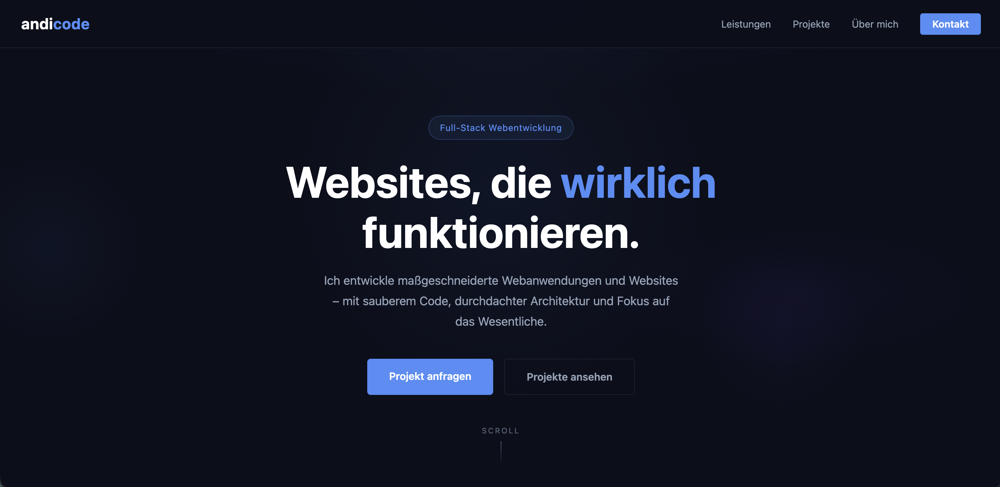
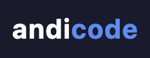

Professional freelance web development & services website
AndiCode.de is my professional freelance web development website. It serves as a central hub for potential clients to learn about my services, explore past projects, see the technologies I work with, and get in touch — all presented through a modern, visually engaging single-page design.
Live: andicode.de
Personal brand website – Built to present freelance web development services professionally.
Live
Actively maintained
Personal Brand
Freelance service website
Single Page + Contact
Services, projects, tech stack
As a freelance web developer, I needed a professional online presence that:
Designed and built a visually striking single-page website with:
Live & Maintained – The website is live at andicode.de and actively maintained.
Professional dark color scheme with blue accents and animated floating background orbs for a modern, immersive feel.
Navigation and card elements use backdrop blur and transparency for a sleek, layered glass effect.
Interactive hover effects with perspective-based 3D tilt on project and service cards, adding depth and engagement.
Content sections smoothly animate into view as the user scrolls, creating a dynamic browsing experience.
Optimized layout for all screen sizes — from mobile devices to wide desktop monitors.
Integrated contact form with validation, allowing potential clients to reach out directly from the website.
Dedicated section presenting four core services: websites, web applications, APIs & integrations, and maintenance.
Visual presentation of the full tech stack — languages, frameworks, databases, and infrastructure tools.

Hero Section - Landing page with animated background and call-to-action

AndiCode Logo - Brand identity with blue accent